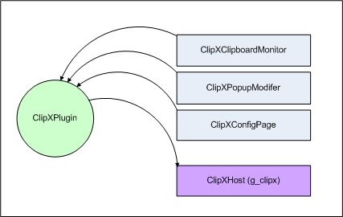

Overview
Plugin Model
The
ClipX plugin model uses the Wasabi
Component architecture, and consists of a number of services,
automatically exposed to ClipX by the ClipXPlugin object. In turn,
the ClipXPlugin object automatically exposes a global ClipXHost api,
so that service implementations may talk to ClipX.

All exposed interfaces use the standard Wasabi Dispatchable technology. This ensures that your plugin will always work even if it uses an older or more recent interface than the one it was compiled with.
Note that all strings within ClipX are encoded in UTF8, see the FAQ if you need to convert them to UNICODE
The following snippet of code creates a ClipXPlugin object and exposes it to ClipX :
Header
#ifndef CLIPX_PLUGIN_H
#define CLIPX_PLUGIN_H
#include
<ClipXPlugin.h>
class SampleClipXPlugin : public
ClipXPlugin {
public:
virtual const char *getName() { return
“My Plugin Name”; }
virtual GUID getGUID()
{ return MY_PLUGIN_GUID; } // This GUID needs to be
declared!
virtual void onCreate() {}
virtual
void onDestroy() {}
virtual void about(HWND parent)
{}
};
#endif
Module
#include
<precomp.h>
#include "plugin.h"
//
Construct the plugin object and export
it
DECLARE_CLIPX_PLUGIN(SampleClipXPlugin)
The following snippet of code creates a ClipX service (in this case, a ClipXPopupModifer), and lets the ClipXPlugin object automatically expose it to ClipX :
Header
#ifndef SAMPLE_POPUPMODIFIER_H
#define
SAMPLE_POPUPMODIFIER_H
#include <ClipXPopupModifier.h>
class
SamplePopupModifier : public ClipXPopupModifier {
public:
virtual
void customizeSystrayMenu(ClipXMenuHandler *menu) {}
virtual
void customizeHistoryMenu(ClipXMenuHandler *menu, int is_hotkey, int
is_submenu) {}
virtual void onCommand(int cmd)
{}
virtual void onCustomSize(int cmd, int *w, int *h)
{}
virtual void onCustomDraw(int cmd, HDC dc, RECT
rcitem, int state) {}
};
#endif
Module
#include <precomp.h>
#include
"SamplePopupModifier.h"
_DECLARE_SERVICETSINGLE(svc_ClipXPopupModifier,
SamplePopupModifier);